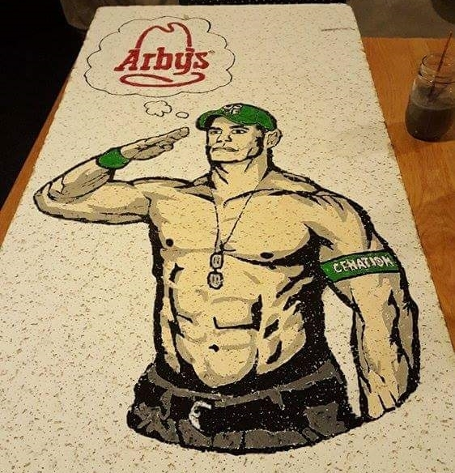
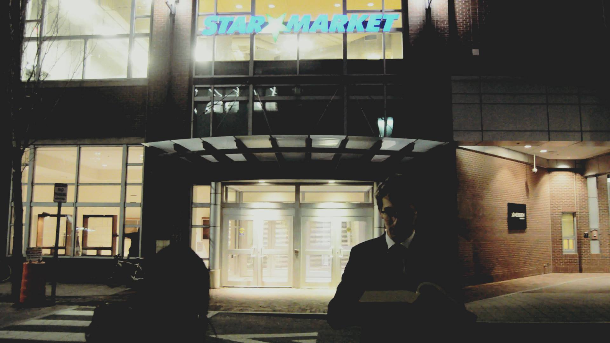
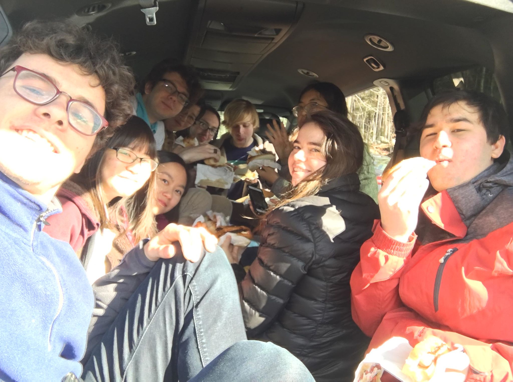

Circa 1888
Random Constructed
Between 1887 and 1891, the marshland south of present day Front Street is sold by the estate of Richard Henry Dana Jr. to US Bicycle Patentholder Albert A. Pope and his associates, H.D. Hyde & G.T.W. Braman of the Cambridge Street Railway. The group construct, in 1892-1896, a bicycle/"velocipedal" racetrack on the other side of Lansdowne operating as the Cambridge Field Company.
{kind=link}
{kind=link}
In 1894, Pope and Qunicy architect/lumber dealer Stephen O. Moxon receive building permit 4439 to construct a 4-story building at 40 Front Street (282-290 Massachusetts Avenue) - Moxon would go on to build the apartments behind in 1895.
Random Hall is possibly the oldest building in MIT's collection being built before MIT itself moved to Cambridge (1894, bought 1967) - and only competes with the Metropolitan Storage Warehouse (W41) (built 1894-1895, bought 1962).
1968-02-29 to 1970-06-12
Random Opens
In September 1967, the institute had 60 students in overcrowded dorm rooms, 100 in overflow apartments, and was expecting to lose 90 beds to renovations. 300 beds were planned for MacGregor which would be constructed over the next two years. MIT's temporary solution was to purchase a derelict apartment building at 282-290 Massachusetts Avenue as overflow housing.
Trademarked names like Maxwell House and Random House are rejected. Random Hall is chosen to be named after J. Arthur Random. See origin story emails (these are also in the random-hall athena locker).
In 1970, MacGregor finally opened and Random was removed as a housing option.
Image pre-renovation in The Tech V87-29. 1 and The Tech V87-47. 1,3
More about the name in The Tech V87-57. 1. Also see The Tech V88-4. 5.
1977-09-01
Random Re-Opens
In 1977, the admissions office underestimated the yield of students by (expected 1000, 1102 committed, 1092 arrived) and thus Random was permanently temporarily added to the MIT housing stock. See The Tech V97-27, 1.
1995
Laundry Server v1
The original laundry server is built as a 6.111 project (we know because of the article featuring v2) by Phil Lisiecki and Kevin Lynch (photo via here.). The first archived version is hosted in 1997 on spleen.mit.edu by Jacob Schwartz (quark), the OK soda guy. The friend group also did a hack with Jolt Cola.
1995-10-31
Random Maintenance Issues
Chimney blockage smokes up building, sewage backups, and flooding. Administrators back their lack of maintenance by fact they plan to redevelop the dorm in less than 10 years. See The Tech V115-54. 1.
1996-11-21
First Reference in (known) Minutes
"Locks will be put on the 1-282 fridges to attempt to prevent future food thefts."
1997
Donut Floor
“The first floor is one of three all male floors in Random Hall. Famous for their coffee and Dunkin Donut study breaks, they are sometimes referred to as "Donut Floor." They are proud to house "The Youngest Student at MIT," and you may even be able to visit with him during Rush, if his busy schedule permits.” - via Rush website.
1998-05-12
Star Market Opens
Star Market opens at 20 Sidney St. behind Random. See ad in The Tech V118-26. 14. Development in this former Simplex (Wire and Cable) site is controversial due to lack of affordable housing. See protests. Also called the name of the associated branding Shaw's.
Circa 2000
Shafting Banned
The Bylaws are updated to ban "shafting" i.e. dropping glass objects from the roof.
Previously, the rules were
- NEVER shaft anything organic.
- Do not shaft entire recycling bins of glass bottles; in general, shaft only bottles you finished.
- Shaft only in the 282 shaft.
- Do not shaft Course 6 students (not technically organic, but they still smell bad)
Via the archived 1998 Rush website - actually still active here.
1999-2001
Bathroom and Laundry Server v2
Jim Paris rebuilds the laundry server in a format that functions through 2013 mostly repaired by Destiny. The next iteration is hosted on a Raspberry Pi with interfaces housed in Sparkfun boxes. It ran 2013-2018 until IS&T sold our IP address and nobody re-registered it. It implements text messaging by spam-emailing the number at all the common carriers' text-by-email addresses. It also logged indefinitely all of the active requests every time the status changed. As of April 3, 2018, there were 73 unique users making 465 requests.
In summer 1999, the bathroom server is first installed, first detecting lights in bathrooms then with magnetic interlocks. The idea is by Shannon Cheng and implemented/hosted by people including Riad Wahby. In 2001, it is rebuilt by Jim Paris and other Foo/Destiny/fort-awesome residents. This is also maintained by Destiny through until 2018 when taken offline. The Power Over Ethernet cables still run from a switch in the music room to every bathroom door where the wires are torn and sensors are falling off. The original beige monstrosity is sitting in the EE lab with a sticky note.
2001-2002
Robotics Lab
"Random is home to a Lego robotics lab, located on Dead floor. We use the lab to teach an introductory robotics seminar every term. The seminar is taught by dorm residents for dorm residents, who get 6 units of general elective credit for their participation." - Rush.
2002-02-14
Naming Rights Sold
eBay Item # 1700894687: Name a Floor at MIT's Random Hall; sold for $36.00; 14 bids 2/4/02-2/14/02. We are named Destiny after someone born in 1996. We send this certificate. See results or a record from the last hours of the auction.
{kind=link}
2002-2003
Choda Fridge
Before a dormwide soda fridge system, Destiny operated a Rock-Ola vending machine with computer payment system. See ChodaStat usage statistics.
2003
A Good Destiny
This era is well-documented including quotes via Ian Martin and images via Riad Wahby. Thanks to Ian and Riad (on right), and the rest of the kitchen crew: Petar, Chris(hippo), Sherv, Max, George (Waksman), Jim, Ariel, Sam, Rodin, Amanda, & May for documenting your time on the internet. Go see the oldest known video of the kitchen. Interestingly, they lived on Foo and Clam - but used the social list fort-awesome.

2003-03-17
Nerd Crossing
Members are involved in hacking this sign to say "NERD CROSSING - MASS AVE SING LN DELAYS - ILTFP"
2003-2006
Fort Awesome
A group consisting primarily of Destiny and Foo residents, making joint budget requests. An empty website. Hosted a weekly movie night called Random Film Institute
2004-09-19
MythTV
Over time, Destiny acquired a large number of servers on an internal network known as Foo Net which hosted media internally and externally. This is one of the semesters they were budgeted to be repaired using dorm funds. There is a functional cooling system with a duct running through ceiling tiles into the shaft. There is also a connection to kitchen MITnet ethernet port via an orange ethernet cable running from the lounge closet through IS&T cabling and out the kitchen electrical closet. The last server HDD crashed in 2019.
2004-11-??
Potato Cannon
After a year of messing with compressed air, Destiny builds a Potato Cannon
2005
Lottery “Rigging”
A group of seniors begin investigating statistical gambling strategies. They eventually determined that if they purchased at least $600,000 worth of tickets during a "roll down," they could garner an average profit of more than 15 percent. Large volume ticket purchases at Texaco, White Hen Pantry in Belmont, and Mobil in Amesbury. In 2010, profited $700,000 after buying 700,000 $2 tickets. See 1 and 2.
2005-11-13
Last (known) Destiny fire alarm.
A toaster catches on fire (according to House Meeting minutes). Black Hole frosh set it off in our kitchen in 2019 but we don't talk about that.
2006-04-30
Explosions
Complaints about dry ice explosions after 1am like that in the i3 video result in a 2-hour House Meeting.
2007
Foo Bathroom Display
A device was built 3 years earlier to play a musical note and read out messages from internet strangers to users in the Foo bathroom. The creator moved to Destiny and now there’s an ethernet cable in the bathroom after the migration.
Circa 2007
Destiny Challenge
Monkey bars are installed down the kitchen-side hall. This leads to the idea of "The Destiny Challenge": heading down the hall without touching the ground.
This feat was completed by Kevin in the copyright-stricken 2015 i3 video. I've also seen two other individuals complete it implying it is relatively easy for anyone with upper-body strength so nobody is keeping track.
2008-2012
The Strong Arm
Destiny acquires a large metal object for cruft-smashing (cruft referring to old/unused junk especially computer equipment - the dorm even inventoried it). See demo in the i3 video
2011
Magic: The Gathering
The game is commonly played in the kitchen. 3000 cards have been left behind. In 2019, we tried to sell them on eBay - it didn't go well.
2012-2013
The Go-Kart
Destiny uses 2 semesters' floor budgets to buy an indoor go-kart. It is featured in 2012 Rush Event "ASSCARS : The Destiny Dune Buggy Challenge". Someone takes it outside and it is impounded in Fall 2013.
2014
112 Small Half Door
The room has a large enough closet to be a small half and has been host for years to a whiteboard on a servo controlled by an RFID card reader. 2013 or earlier, Destiny installed an actually door instead. Now the building has another room. In 2014, a freshman complained about the wiring inside and Housing replaced the door.

2015-12-18
John Cena
Kyle makes this ceiling tile of John Cena thinking about Arby's. It is featured on Buzzfeed in 2016 in the article 27 Batshit Sights You’ll Only See In A College Dorm
2015/2016
Aquarium
Destiny starts an aquarium and takes weekly visits to the pet store. Ignoring all of the employee's recommendations, Destiny purchases a plethora of fish with fun names like Mark Suckerberg, Flavor-blasted pizza, and Nrdafiy Chikmk (who named themself by swimming to letters). Ultimately, the fish eat eachother and the tank remained empty - though running. In 2017, I placed my animatronic Big Mouth Billy Bass, Billy, into the tank. I cleaned the rust before the summer when the tank was placed in the trunk room where it remains today. In the photo, you can see Billy, Ken Bone, and the letters nrdafiy used to name itself.
2016-01-29
MASLAB
Team Skrub Wreckers wins Mobile Autonomous Systems LAB IAP course along with the "Most Likely to Be Future Staff" award. This is exactly how it goes with barely anyone outside Destiny volunteering in the coming years. Fun fact: MASLAB supplies were located in a random IS&T closet in Stata as instructed by the department space manager - until IS&T started taking back closets and most supplies were thrown away. As a result the master set of keys dating back to before Stata are all useless.
When running MASLAB in 2018, Andrew receives a delivery from D.E.Shaw the day after the competition with 288 each of S,M,L,&XL sweatpants and wireless bluetooth speakers - you'll see them around campus from time to time.
2016-02-19
Arby's
The floor wants to try the secret Meat Mountain at Arby's. Sadly, the closest location is 26mi away in the Solomon Pond Mall in Marlborough, MA. After threatening to walk the whole way, GRT Shaiyan gives in to renting a van. Our photo on google maps ends up with 40k views. The location is now closed.

2016-06-21
The Great Random Fire
A contractor had been discarding cigarettes from neighboring construction onto the flammable roofdeck resulting in fire over the summer, forcing residents to Novartis’s sidewalk, to Edgerton House, to the Hyatt, to Next where they were ejected due to alcohol consumption, to New for the summer. Grilling on the roofdeck has been canceled since. Destiny stadium seating suffered water damage and was replaced. Also, the fire alarm gathering point was moved to Blanche street.
2016-12-15
Flavortown
Kyle enshrines the oven in a tribute to Guy Fieri.
2016
Todds
The floor collects Honey Bunches of Oats boxes with Todd Smith on the back. These are called Todds. The collection must be replaced after the fire.
2017-02-12
Crystal Pepsi
Destiny buys all the Crystal Pepsi at Star Market for permission to take the display as well. The process of filling the shelves begins. By 2018, we purchase a second display for $50 plus $50 shipping as the glue is permanent so the stand is not collapsible. We fill both with a total of 135 bottles proudly displayed in the kitchen. That's 9.3kg of sugar consumed by us.
The box for the second display remained in the kitchen labeled as room 110s. Multiple individuals slept in it until thrown away.
2017
Beantowns
Star Market receipts have buy one get one 50% off coupons for Beantown Taqueria across the street so the floor collects them and introduces a new Beantown currency tabulated on the fridge. Eventually, Luis builds a Discord bot named after our GRT, Mark, to do the calculation using a command "beans," the new colloquialism for the Beantown currency.
2017-02-24
Spiciest Memelord
ltchin wins Jeopardy with Final Jeopardy answer "Who is the Spiciest Memelord?".
This leads to the introduction of the Memelord Burrito at Beantown. See a blog post. As of 2021, it is still available if the owner is working. The winning money will soon be useful for a speeding ticket when Destiny heads to DC.
2017-02-25
Cars 3
We upload alternating seconds of Cars 1 and Cars 2 to YouTube. Disney doesn't respond to a copyright claim appeal so we can monetize this content. When forced to be part of a dorm scavenger hunt, we added "watch Cars 3 at 16x speed".
2017-03-28
DC Trip
Destiny heads to DC to visit the South African chicken restaurant Nandos for the meme "A Cheeky Nandos with The Lads" - and the National Air & Space Museum. ltchin gets pulled over for near felony speeding while Luis is eating spaceship gummies. They walk around 27mi during the day. The airport closes at night and Destiny is stranded in The Buzz Zone.
2017-08-14
WWE
Destiny heads to WWE Monday Night RAW at TD Garden in Boston. Luis holds up a John Cena sign above the redditors holding a BRAAAAAAUN sign even though John Cena is not present. See ltchin's post.
Fall 2017
Stickers
Star Market has a sticker-collecting rewards system so every floor is gathering stickers on their fridge to win items. We end up with a panini press and use it once.
2017-12-04
Toasters Study Break
We steal everyone's toasters for a day and serve toaster foods.

2017-12-13
Arby's 2
We return to the nearest Arby's but this time with two vehicles. We are photobombed by a guy who calls himself "Deano/Dino".

2018-02-03
Star Market closes
MIT becomes a food desert with the closest option for groceries being Target (then H-Mart, pharmacies, Whole Foods, Trader Joes, Market Basket, and the next Star Market).
2018-03-02
Power Outage
After a storm, there is a power outage effecting only Random and N51 from 10:30AM 3/2/18 to 3:00 PM 3/3/18. We receive free food at Dining Halls. We get bored and Kyle drinks 7 Rick and Morty Szechuan sauce packets. There is email discussion about using generator power for Bitcoin mining.
2018-03-22
Christmas in March study break
A rare study break where we put effort into a theme. Featuring XhiDae collecting all the building's ramekins to make Figgy pudding, my attempt at a half-of-Random Gingerbread house which sat on the table for the next month, ham, candy canes, sugar cookies, Mountain Dew Holiday Brew, and of course Christmas decorations (paper snowflakes, lights, and moving our year-round tree to Foo) and music like All I want for Christmas is a Space Jam, the Paul McCartney Christmas Song, Domonick the Donkey, & everyone's favorite.
2018-05-06
Pizza Cutters
On this day, I move all 13 of our pizza cutters to the cupboard and build a holding rig. We have the big blade we use every time, BP and off-brand all-plastic cutters, "Shark", "fancy Italian" with carrying case, an all-metal one, a straight plastic one, 2 curved plastic ones, 2 without handles that sit in the bin, and one circular saw novelty cutter I bought in 2017. Now during CPW and REX tours, I just pull open the door. We often meme about buying more novelty cutters with floor budget like the axe, record, scissors, bike, unicycle, or scissor lift models. But just like salt, sand, and bees, we never actually buy any.
By 2019, our frozen pizza consumption rises to where our limiting factor is cleaning 4 pizza pans.
2018-08-26
Cars party
For Luis returning to MIT, we held a Cars-themed party. We made a Chick Hicks cake and had Cars 1-3 party hats, balloons, favors, & too many stickers. We hung up checkerboard ribbon and used tape with a street design to write on the floor and across straight surfaces to which we taped wind-up cars.
The word Destiny on the door is also made of car stickers but they're before our time.
2 years later, some stickers remain on cupboards and other hard-to-reach areas.
2018-09-03
Sonic
In Summer 2017, rocket team went to the Spaceport America Cup in Truth or Consequences, New Mexico where the only food available at night was Sonic - specifically the beverage Ocean Water which became the name of the next propellant. Thus Sonic became a meme. The closest Sonic to Random is 15mi away and I decided to walk to it, convincing Isaac to go with me at midnight and ltchin to pick us up at 5am.
2018-09-10
Bed bug
I find a bed bug on the couch so we throw it out and begin "nuking the floor" using bug spray while listening to Fortunate Son. We ask for budget to replace the couch but we found a couch for free so we upgrade the floor computer instead. No more bedbugs are found.
2018-09-29
The Dishwasher
I've combined a few stories into this date. Our dishwasher is on wheels and requires a connector on the hose and an adapter on the faucet - and a non-tripped thermal fuse to operate.
In 2017, the connector was slipping off the faucet so Destiny submitted an unanswered work request. Ultimately they took one from the basement dishwasher but had hypothesized epoxying the connector on and submitting another request named "Can't get it off".
In 2018, the thermal fuse blew. I submitted a work request with a link to order the part instructions on how to replace it. In the meantime, I shorted the fuse with a cheap stretch of wire from a $1 multimeter probe. The appliance repair people who showed up weeks later received no information but "look at the dishwasher" and concluded it was running properly and left.
In 2019, the mixing valve in our faucet broke so MIT bought an entirely new faucet and threw away the dishwasher adapter. The house mechanic, Tim, tried multiple parts but ultimately MIT solved the problem by buying us a new dishwasher compatible with the newer faucet adapters. On pi day 2019, before using the new dishwasher, I tried to steam an aluminum-wrapped hotdog in it.
2018-10-05
Spinning
I play with the original Euler disk toy left by SPS in Foo for MIT Museum outreach and begin scouring for a large disk. I realize a large circular plate destined to be waterjet as a Rocket Team launch stand baseplate will work. We try it on all the other floors at 3am. Over the next few months, we demonstrate spinning to all visitors and perform safety tests such as dropping it on a hot dog.
2018-10-11
"Facts" Study Break
Surreal Meme creator Timotainment released a popular series of videos: egg facts; bean facts; yam facts; trapezoid facts; corn facts; each with 2 normal facts and then a surreal metaphysical detour. We served food (and sand) but only those featured in the videos - while playing the videos. Sadly these videos have been removed from the internet.
2018-10-19
Subwoofer
Setting up the new floor computer with the old AiW sound system, we uncover the subwoofer behind the couch and decide to plug it in. It very effectively vibrates the couch. We had heard of the circa 2013 (based on the Rush event Dubstep with Destiny) habit of playing tones with it up the chimney - and also of the circa 2001 legend, mjolnir
2018-11-06
Drill Press
We find a drill press on reuse at the N51 loading dock across the street. We bring it back on the shop cart. We discover that we have 20A outlets and it works. We begin "spinning" things on it (especially once I bring back an orphaned chuck key):
- 3.091 ruler - hits support making flapping sound
- Amazon Prime mailer - shears apart violently
- Backwards toilet paper roll - builds into a pile
- Mini whisk - can combine flour and water
- Fidget spinner on a bolt - spins
- Sour cream packet - directed splatter
- Hot dog in a nitrile glove - liquefied hot dog through hole on a well-defined plane
To EHS, we refer to it as a lamp as one of the two switches is for the light. I temporarily use the base as a table for my laptop.
2018-11-15
Parmigiano Reggiano
Gus is recommended this video from the Parmigiano Reggiano Consortium which we all watch in the kitchen. With our newfound knowledge, we head to Star Market hoping to buy a truckle. We realize the price would be hundreds of dollars per person so buy an assortment of cheese/baguettes. We try to prank call the Parmigiano Reggiano Consortium but hang up because we don’t know Italian.
Fun fact: Simmons once bought a truckle for the dorm.
2018-12-14
Mix
A large gathering from other floors/dorms forms around an attempt to mix together Crystal Pepsi and Clear Coke.
2019-02-11
Scooting
We have a mostly-functional scooter that we often ride in circles around the table and halls (slightly better than Kyle achieved in The Daring Game for Girls). At one point, Isaac replaced the bearing with one from a fidget spinner. One day, Andrew rode the scooter into the oven and the burners bouncing made a fun sound so we start doing that periodically/daily. See an example in the i3 video. The scooter does not like this. It eventually makes a sound recognizable as the green line screech and eventually the handle only turns in one direction as smashed ball bearings fall out.
2019-02-24
FishBowlCore
A debate about how big of a CD you would need to see the bits of a sound file. While attempting to find the minimum recognizable level of compression, we realized 8kbps sounds like someone in a fish bowl talking with bubbles and a nokia phone. I eventually build a Discord bot to take a YouTube video and output a FishBowlCore version with appropriate thumbnail.
2019-03-07
Mendel Does a Study Break
Destiny and Foo had always been combined in the study break schedule and MIT Confessions had been conflating one of the three residents, Mendel, with Foo calling the floor Foo/Mendel in floor rankings. So we let Mendel run the study break. Included for completeness.
2019-03-08
Speedrunning
Andrew gets a new Milwaukee M18 FUEL drill so we try pencil sharpening with it. Over the next few months, we look at a number of THQ video games like UP and Ratatouille and Luis eventually begins speedrunning WALL-E. This is a new form of gameplay compared to weekly Mario Kart, Ghostbusters on Halloween, 100%ing 3D Mario games, and Crazy Frog Racer II - a game whose corresponding website is the reason we have ScriptSafe on the floor computer.
2019-04-19
Cereal
We begin collecting and rating novelty cereals whose boxes display on the shelves in the lounge. Here is a spreadsheet of them. We ended up with about a third of the 2018/2019 releases according to the Cereal Timeline. Everyone wanted to try Sour Patch Kids. A lot were bland cheerios like Unicorn Cereal for which I just poured the box into the largest bowl and sat it in the middle of the table. Eventually, I test them as wallpaper.
2019-04-20
Woofing up Loop
Aware that our subwoofer is capable of vibrating Loop's spice rack, we have an E-stop setup to deactivate it. A large gathering forms as we test Loop's tolerance by increasing the volume by 5 percentage points every few minutes.
2019-05-09 to 2019-05-15
Caprisumption
Capri Suns were on sale on Amazon for $0.22 each and we hadn’t used floor budget so we decided to purchase 1000. About 400lbs worth of boxed "cartridges" (10-packs) arrived at desk making them angry. We put them all in my (bowties's) fridge and invited people from Random and Rocket Team to consume entire cartridges provided they tallied their usage on the shame board. Daniel won with over 180 consumed in the 6 days it took to drink all of them. We left one behind labelled "The Fortunate Sun".
2019-05-18
Eggstravaganza
"When I was a lad I ate 4 dozen eggs every morning to help me get large and now that I'm grown I eat 5 dozen eggs so I'm roughly the size of a barge!"- Gaston from Beauty and the Beast. We invite people to help us eat 5 dozen eggs
2019-06-??
Buzzing Sound
Long ago, there was a radiator at the bottom of the 282 stairwell. One of the remaining pipes will move if you step on it. Years ago, someone connected a microswitch to the bottom leading to an overhead speaker. We repaired the system to bring the buzzing sound to a new generation.
2019-08-24 to 2019-08-30
REX
The last pre-pandemic REX week. This time, dormcon is limiting the number of events per dorm. We ran these events:
- Epic Mealtime of Destiny - Our signature event since 2013: making a large ball of food made from smaller pizzas, mac and cheese, and hamburgers or a more creative monstrosity up to 3 pizzas out of cheap grocery store ingredients like raviolis, taquitos, cereal, and dinosaur nuggets resulting in a ludicrous number of calories like the namesake show.
- 2% Milk - we calculated that one could become 2% milk by drinking about 6 cups so we decided it should be an event
- Grocery Store Scavenger Hunt - we joked about how these events are funded so we decided to request cash to spend on our groceries under the guise of a scavenger hunt. One person showed up so we sent them to Target for bananas.
- Mario Kart and Wings - Continuing the trend since 2007 of Math & Tea, Physics & Fizzes, Chemistry & Cake, Biology & Brownies, CS & Juice, etc. in which one gives talks while embezzling foods, we decided for wings. Ultimately, we watched Watch for Rolling Rocks - 0.5x A Presses and WingsOver Somerville canceled our first oversized order so our wings arrived late.
- Spiciest Memes - whatever we're doing in the kitchen
- Contemporary Art & Charcuterie - an event by me which shows performance art after I embezzle large quantities of meat and cheese.
Former REX and CPW events include:
- FRYday - every few years - we put random items in our deep fryer. Years ago, it was a Friday tradition.
- Rockets (and Ramen) - 2017/18 construction using an Estes Designer special kits from Rocket Team lab; no launching allowed.
- Sprite - 2017 - it's actually Crystal Pepsi in the bottle.
- (Almost) Life-Size Settlers of Catan - when Destiny played this so much we built a map into a table, we ran this event 2010-2017
- Chainmail - ran 2009-2015, sometimes "and Cheese"; supplies from the The Ring Lord are in our closet
- Nacho Average Nachos - 2015
- Spooky Scary Videogames - 2015
- Mario Kart - various years
- Build A Pizza - 2015 - the attempt at "cubular pizza".
- ASSCARS : The Destiny Dune Buggy Challenge - 2012 Go-Kart race
2019-10-03
Fortunate Study Break
Continuing our purchasing habits, we bought $50 worth of fortune cookies and decided to play Fortunate Son on loop. Our announcement message to r-h-t was "good luck eom" after a reminder from "destiny-study-break-in-17-hours-eom@mit.edu"

2020-01-26
Flo’s
Our largest trip to our favorite small no-nonsense hot dog joint in York, Maine in which we purchased 48 hot dogs. Below is what 21 layed out looks like:
2020-03-10
Coronavirus
"3. Undergraduates should not return to campus after spring break." - A significant new step in response to Covid-19
Everyone is forced to vacate campus while all activities move online - mostly to Zoom and Discord. CPW is canceled for CP* and REX becomes Exploring Support Communities part of Support CommUnities For First Years - events are poorly attended and little interaction is had between upperclass students and first years until coming to campus in Spring 2021 when still limited to one's own dorm and in many cases to a max size 6 pod whilst many upperclass students had moved off-campus. Seniors are allowed in the Fall and everyone else in the Spring (up to Student Housing Assistance Review Process requests). Campus access is limited to residents with biweekly testing and daily attestations and a sense of unwelcome to explore meaning most first years haven't been down the Infinite Corridor and have no sense of building numbers or the culture of other dorms.
To prevent any transmission, kitchens are closed except for microwaves and fridges so every student requires a mealplan. In the Fall, Random has a Bon Appetit setup in Foo for dinner and weekend brunch while breakfast and lunch are long lines at the Student Center. In the Spring, Restaurant Associates serves breakfast, lunch, dinner, and weekend brunch in Foo. Typical free food events are canceled. There are also 82 Tim the Beaver signs reminding students to wear masks and social distance.
2020-09-09 to 2020-11-24
Pod Lounge
112 is opened as a "Pod Lounge" assigned to our Destiny pod for maskless interaction in the former Kevin's room. We recreate the kitchen a few feet over but now with windows facing Mass Ave. We stole chairs out of the adjacent room where common area furniture was tetrised and out of the basement to fill in the room. For a while, we'd imagined buying a Belshaw-Adamatic Donut Robot Mark VI for hypothetical restaurant "Dunking Donuts", so when someone arrived in front of the window, we refer to it as "at Dunking" and we send receipts to anyone who talks through the window. We also keep the TV running with a Discord bot to queue videos.
2020-09-14
Golf
Luis and I finally carry out the plan to have Destiny take the PE requirement too seriously by signing up for golf PE and arriving in matching golf knickers.
2020-11-22
Boiler
The boiler is replaced with an even more efficient system for baking residents. The temperature in every room will be 80-95 through April.
Old system: Henry B. Smith Company, Inc. 28A-series model GO28A-S-8 15 PSI MAWP 1,256,000 BTU/hr I=B=R rated cast iron steam boiler number N99-10106 manufactured at Westcast Inc. in Westfield, MA circa 1978 with PowerFlame, Inc. C-type model C2-GO-20B gas/light-oil burner with The Director light-up UI driving Honeywell Modutrol IV proportional control motor with International Telephone and Telegraph Controls Mcdonnell-Miller Boiler Control 51-2 mechanical water feeder with low-water cutoff, Antunes Controls LGP-A M1 low gas pressure switch, Honeywell V4055A1098 fluid power gas valve actuator driving Asco-RedHat-8215B80 2" solenoid valve, and Honeywell models L404C1147 15psi Pressuretrol, L408J Vaporstat, & L4006A Aquastat, activated by Heat-Timer Corporation Electronic Heating Control model EPC.
New system: Henry B. Smith Company, Inc. 28HE-series model GO28HE-S-8 15 PSI MAWP 1,985,000 BTU/hr I=B=R rated, AHRI, ASME, & CSA Group certified cast iron high efficiency steam boiler number 193046 manufactured at Westcast Inc. in Westfield, MA circa 2020 with PowerFlame, Inc. C-type model C2-GO-20A gas/light-oil burner without The Director light-up UI
2021-05-27
The End?
Cultural items remaining:
- 2 displays containing 135 Crystal Pepsi bottles
- The "Lamp" - the drill press
- A mint in-package backwards-printed multimeter Gus received in 3.091, a class whose final he slept through
- Orange - a tiny wireless keyboard
- The most recent Christmas tree
- IKEA Markus office chair in green
- The subwoofer
- The aquarium + Billy
- 13 Pizza Cutters
Traditions to continue:
- On Columbus Day, steal spices from one floor and email out saying you stole them from a different floor.
- On Valentine's Day, send a card to both all-female floors telling them "Happy Valentine's Day to our second-favorite all-female floor.
- Epic Mealtime/Fryday
- Collecting novelty items
- Building unnecessary infrastructure